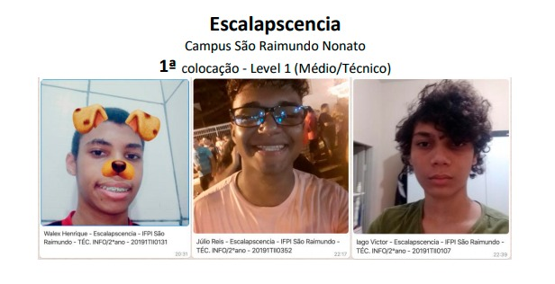

História
Antes do IF
Fui criado numa cidade chamada Várzea Branca - PI e estudei todo o fundamental no ensino público. Sempre fui uma criança sem muita companhia, e como a maioria desse tipo, tende a se focar nas coisas que se destaca. Atualmente percebi que tenho uma espécie de síndrome do exagero, e isso foi e é muito bom, fico logo obsecado por treinar algo novo, de novo e de novo, e isso fez-me destacar em muitas coisas: Estudo, música, esportes etc.
Abalo inicial
14/03/19 Foi a data do meu primeiro dia "de verdade" como federal, e "tomei uma surra" percebi que, não era tão bom quanto pensavam que eu era, e pior, desapontei-me comigo mesmo. Tomei a decisão de treinar/estudar, muito! Fiquei abalado com o fato de meu esforço não estar dando os resultados que eu queria. Vendo meus companheiros evoluírem, e eu alí, pensando em desistir.
Primeiros resultados
A vontade de desistir passou rápido! Os resultados logo vieram, e com eles, devo admitir que um pouco de arrogância. Os veteranos me encheram de medo a respeito de uma matéria (Algoritmos), e ela foi a escolhida para o meu primeiro 10 aparecer. Apareceram alguns olhares de inveja, mas não deixei que me abalacem, o euforismo baixou e voltei a pensar racionalmente, deixei a arrogância de lado e comecei a ajudar meus colegas. Apartir dali vi que eu, que demorei pouco mais de 2min para descobrir onde se ligava o computador do laboratório, tinha me destacado na matéria mais difícil do curso."O trabalho duro vence o dom natural".
Com batalhas é que se ganha a guerra! Vi exemplos de meus professores, que tinham a história bem parecida com a minha, percebi que com esforço, também conseguiria o feito de uma vida melhor. Decidi me dedicar bastante em todas as disciplinas, tive êxito! Aprendi que, não é possível ser o melhor em tudo, mas é possível ser bom em tudo.
Nem tudo são rosas! Como dizia Machado de Assis, "no meio do caminho tinha uma pedra". É importante saber que estamos sujeitos a enfrentar problemas em nossa tragetória, e nem tudo vai sair como o esperado.
Maratona de programação IFPI@CODE #QUARENTENA
A atividade contou com a participação de 52 times, de 15 campi, e foi realizada através da plataforma URI, com problemas de todos os níves de complexidade, para permitir que todos os alunos efetivamente participassem. Foram 35h ininterruptas de trabalhos dos times em modo 100% online cada um na sua casa.
“Já tinhamos participado de um evento parecido com uma "maratona", porém não com essa dificuldade, tivemos que estudar coisas que não sabíamos para nos unir e resolver os problemas, horas e horas pensando em como fazer. Acredito que conseguimos chegar nessa classificação por conta do nosso professor Dann ter ensinado muito bem algoritmos”, complementou, Escalapscencia, campeão Level 1.
Confira